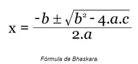
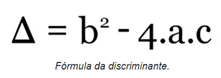
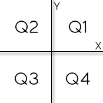

Lista de Exercícios POO
📌 Descrição das Atividades
Orientação sobre como desenvolver as atividades
☕ Java
Estrutura Condicional: Exercícios em Java ☕
Problema 1: Notas 📝
Fazer um programa para ler as duas notas que um aluno obteve no primeiro e segundo semestres de uma disciplina anual. Em seguida, mostrar a nota final que o aluno obteve (com uma casa decimal) no ano juntamente com um texto explicativo. Caso a nota final do aluno seja inferior a 60.00, mostrar a mensagem “REPROVADO”.
Exemplo 1: Aluno Aprovado
Digite a primeira nota: 45.5
Digite a segunda nota: 31.3
NOTA FINAL = 76.8
Exemplo 2: Aluno Reprovado
Digite a primeira nota: 34.0
Digite a segunda nota: 23.5
NOTA FINAL = 57.5
REPROVADO
Problema 2: Fórmula de Bhaskara 📐
Fazer um programa para ler os três coeficientes de uma equação do segundo grau. Usando a fórmula de Bhaskara, o programa deve calcular e mostrar os valores das raízes x1 e x2 da equação com quatro casas decimais. Se a equação não possuir raízes reais, o programa deve exibir uma mensagem apropriada.


Exemplo 1: Raízes Reais
Coeficiente a: 1
Coeficiente b: 0
Coeficiente c: -9
X1 = 3.0000
X2 = -3.0000
Exemplo 2: Raízes Reais 2
Coeficiente a: 2
Coeficiente b: -4.5
Coeficiente c: 1.7
X1 = 1.7697
X2 = 0.4803
Exemplo 3: Sem Raízes Reais
Coeficiente a: 1
Coeficiente b: 3
Coeficiente c: 4
Esta equacao nao possui raizes reais
Problema 3: Menor de Três 🥉
Fazer um programa para ler três números inteiros. Em seguida, mostrar qual o menor dentre os três números lidos. Em caso de empate, mostrar apenas uma vez.
Exemplo 1:
Primeiro valor: 7
Segundo valor: 3
Terceiro valor: 8
MENOR = 3
Exemplo 2: Com Empate
Primeiro valor: 5
Segundo valor: 12
Terceiro valor: 5
MENOR = 5
Problema 4: Plano de Telefonia 📱
Uma operadora de telefonia cobra R$ 50.00 por um plano básico que dá direito a 100 minutos de telefone. Cada minuto que exceder a franquia de 100 minutos custa R$ 2.00. Crie um programa que leia a quantidade de minutos consumidos por uma pessoa e exiba o valor final a ser pago.
Exemplo 1: Dentro da Franquia
Digite a quantidade de minutos: 22
Valor a pagar: R$ 50.00
Exemplo 2: Excedendo a Franquia
Digite a quantidade de minutos: 103
Valor a pagar: R$ 56.00
Problema 5: Troco ou Falta 🛒
Elabore um programa para calcular o troco na venda de um produto. O programa deve ler o preço unitário do produto, a quantidade comprada e o valor em dinheiro recebido pelo cliente. Em seguida, deve exibir o valor do troco a ser devolvido. Se o dinheiro for insuficiente, o programa deve informar quanto dinheiro falta para completar o pagamento.
Exemplo 1: Troco Correto
Preço unitário do produto: 8.00
Quantidade comprada: 2
Dinheiro recebido: 20.00
TROCO = 4.00
Exemplo 2: Dinheiro Insuficiente
Preço unitário do produto: 30.00
Quantidade comprada: 3
Dinheiro recebido: 70.00
DINHEIRO INSUFICIENTE. FALTAM 20.00 REAIS
Problema 6: Medidor de Glicose 🩸
Faça um programa para ler a quantidade de glicose no sangue de uma pessoa e exibir sua classificação de acordo com a tabela de referência.
| Classificação | Nível de Glicose |
|---|---|
| Normal | Até 100 mg/dl |
| Elevado | Maior que 100 até 140 mg/dl |
| Diabetes | Maior que 140 mg/dl |
Exemplos:
Digite a medida da glicose: 90.0
Classificacao: normal
Digite a medida da glicose: 140.0
Classificacao: elevado
Digite a medida da glicose: 143.2
Classificacao: diabetes
Problema 7: Lançamento de Dardo 🎯
No arremesso de dardo, um atleta tem três chances para lançar o dardo à maior distância que conseguir. Crie um programa que, dadas as medidas das três tentativas de lançamento, informe qual foi a maior.
Exemplo:
Digite as tres distancias:
83.21
79.53
89.15
MAIOR DISTANCIA = 89.15
Problema 8: Conversor de Temperatura 🌡️
Construa um programa para converter temperaturas entre as escalas Celsius e Fahrenheit. O programa deve primeiro perguntar ao usuário qual escala ele usará para inserir a temperatura (“C” ou “F”). Em seguida, ele deve ler a temperatura e convertê-la para a outra escala, exibindo o resultado com duas casas decimais.
Fórmula de Conversão: C = (5/9) . (F-32)
Exemplo 1: Fahrenheit para Celsius
Voce vai digitar a temperatura em qual escala (C/F)? F
Digite a temperatura em Fahrenheit: 75.00
Temperatura equivalente em Celsius: 23.89
Exemplo 2: Celsius para Fahrenheit
Voce vai digitar a temperatura em qual escala (C/F)? C
Digite a temperatura em Celsius: 28.15
Temperatura equivalente em Fahrenheit: 82.67
Problema 9: Lanchonete 🍔
Uma lanchonete possui vários produtos, cada um com um código e um preço. Faça um programa que leia o código de um produto e a quantidade comprada e, em seguida, informe o valor total a ser pago com duas casas decimais, conforme a tabela abaixo.
| Código do produto | Preço do produto |
|---|---|
| 1 | R$ 5.00 |
| 2 | R$ 3.50 |
| 3 | R$ 4.80 |
| 4 | R$ 8.90 |
| 5 | R$ 7.32 |
Exemplo 1:
Codigo do produto comprado: 1
Quantidade comprada: 3
Valor a pagar: R$ 15.00
Exemplo 2:
Codigo do produto comprado: 4
Quantidade comprada: 2
Valor a pagar: R$ 17.80
Problema 10: Múltiplos 🔢
Crie um programa que leia dois números inteiros e determine se um é múltiplo do outro. Os números podem ser inseridos em qualquer ordem.
Exemplo 1:
Digite dois numeros inteiros:
6
24
Sao multiplos
Exemplo 2:
Digite dois numeros inteiros:
13
5
Nao sao multiplos
Problema 11: Aumento Salarial 💼
Uma empresa concederá um aumento salarial aos seus funcionários com base em faixas salariais. Fazer um programa para ler o salário de uma pessoa e mostrar o novo salário, o valor do aumento e a porcentagem de aumento, conforme a tabela.
| Salário atual | Aumento |
|---|---|
| Até R$ 1000.00 | 20% |
| Acima de R$ 1000.00 até R$ 3000.00 | 15% |
| Acima de R$ 3000.00 até R$ 8000.00 | 10% |
| Acima de R$ 8000.00 | 5% |
Exemplo 1:
Digite o salario da pessoa: 2500.00
Novo salario R$ 2875.00
Aumento R$ 375.00
Porcentagem = 15%
Exemplo 2:
Digite o salario da pessoa: 8000.00
Novo salario R$ 8800.00
Aumento R$ 800.00
Porcentagem = 10%
Problema 12: Duração do Jogo 🕒
Leia a hora inicial e a hora final de um jogo. A seguir, calcule a duração do jogo, sabendo que ele pode começar em um dia e terminar no outro, tendo uma duração mínima de 1 hora e máxima de 24 horas.
Exemplo 1:
Hora inicial: 16
Hora final: 2
O JOGO DUROU 10 HORA(S)
Exemplo 2:
Hora inicial: 0
Hora final: 0
O JOGO DUROU 24 HORA(S)
Exemplo 3:
Hora inicial: 2
Hora final: 16
O JOGO DUROU 14 HORA(S)
Problema 13: Coordenadas Cartesianas 🗺️
Leia os valores das coordenadas X e Y de um ponto no plano cartesiano. A seguir, determine a qual quadrante o ponto pertence (Q1, Q2, Q3 ou Q4).

- Se o ponto estiver na origem, escreva a mensagem “Origem”.
- Se o ponto estiver sobre um dos eixos, escreva “Eixo X” ou “Eixo Y”, conforme a situação.
Exemplo 1:
Valor de X: 4.5
Valor de Y: -2.2
Q4
Exemplo 2:
Valor de X: 3.1
Valor de Y: 2.0
Q1
Exemplo 3:
Valor de X: 0
Valor de Y: 0
Origem
Exemplo 4:
Valor de X: 3.8
Valor de Y: 0
Eixo X